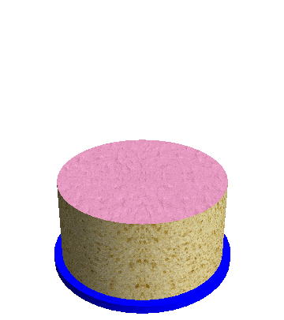

Adam plays the following game with his birthday cake.
He cuts a piece forming a circular sector of $60$ degrees and flips the piece upside down, with the icing on the bottom.
He then rotates the cake by $60$ degrees counterclockwise, cuts an adjacent $60$ degree piece and flips it upside down.
He keeps repeating this, until after a total of twelve steps, all the icing is back on top.
Amazingly, this works for any piece size, even if the cutting angle is an irrational number: all the icing will be back on top after a finite number of steps.
Now, Adam tries something different: he alternates cutting pieces of size $x=\frac{360}{9}$ degrees, $y=\frac{360}{10}$ degrees and $z=\frac{360 }{\sqrt{11}}$ degrees. The first piece he cuts has size $x$ and he flips it. The second has size $y$ and he flips it. The third has size $z$ and he flips it. He repeats this with pieces of size $x$, $y$ and $z$ in that order until all the icing is back on top, and discovers he needs $60$ flips altogether.

Let $F(a, b, c)$ be the minimum number of piece flips needed to get all the icing back on top for pieces of size $x=\frac{360}{a}$ degrees, $y=\frac{360}{b}$ degrees and $z=\frac{360}{\sqrt{c}}$ degrees.
Let $G(n) = \sum_{9 \le a \lt b \lt c \le n} F(a,b,c)$, for integers $a$, $b$ and $c$.
You are given that $F(9, 10, 11) = 60$, $F(10, 14, 16) = 506$, $F(15, 16, 17) = 785232$.
You are also given $G(11) = 60$, $G(14) = 58020$ and $G(17) = 1269260$.
Find $G(53)$.
solve(n=11) → ?solve(n=53) → ?